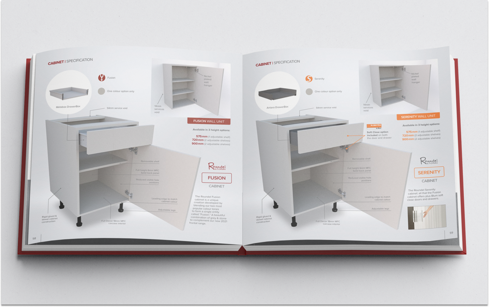
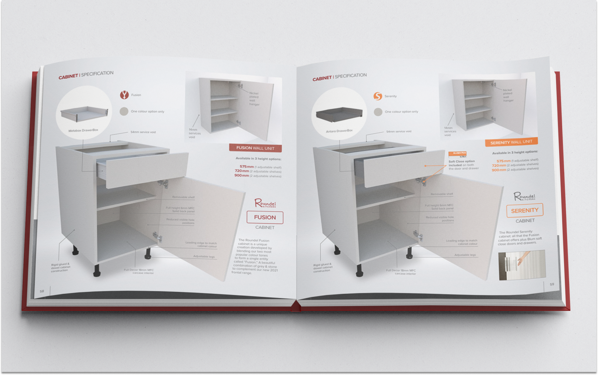
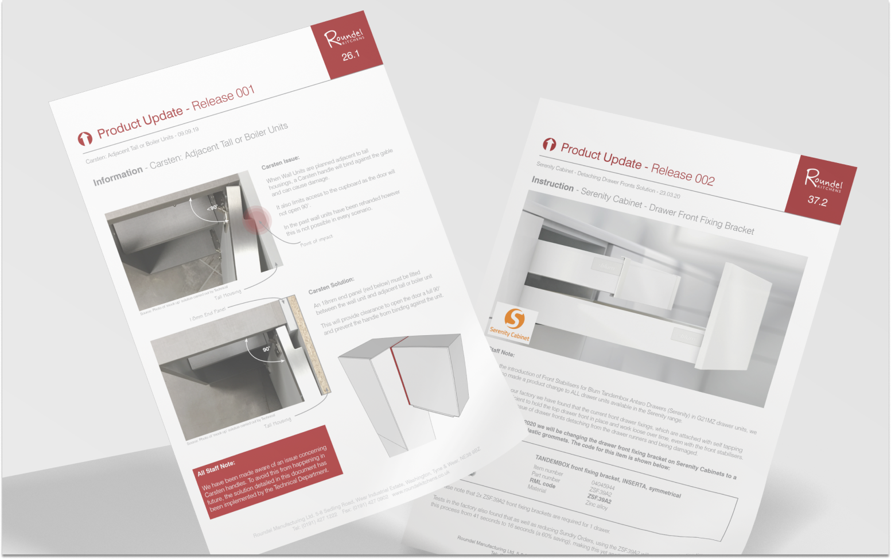
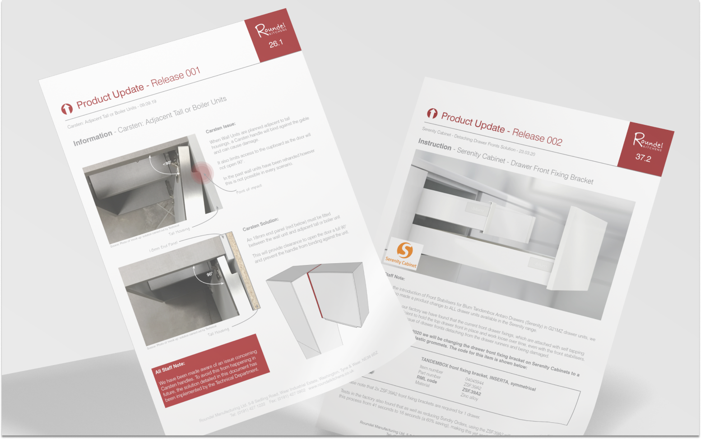
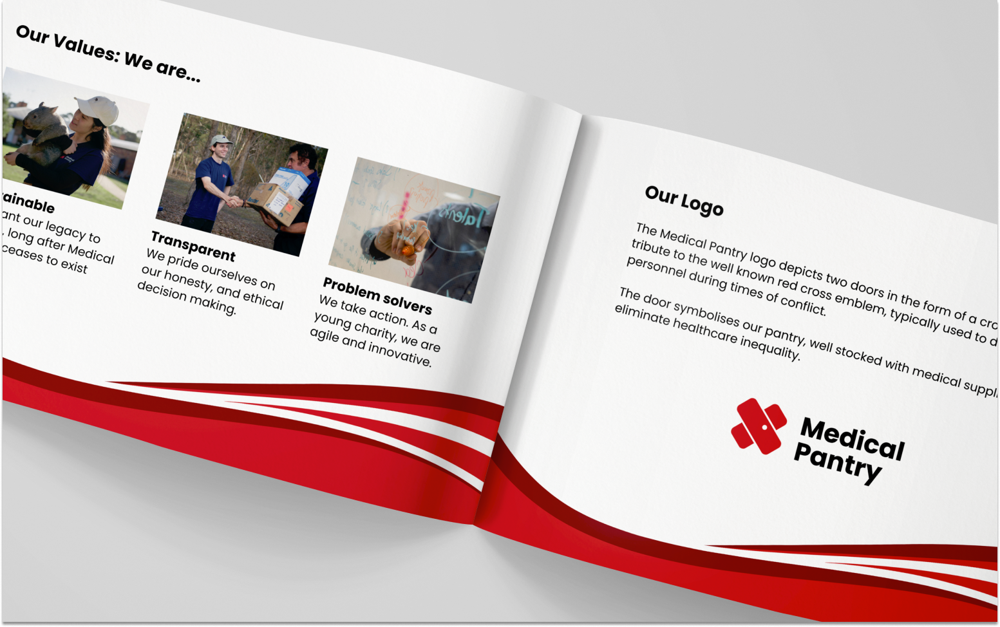
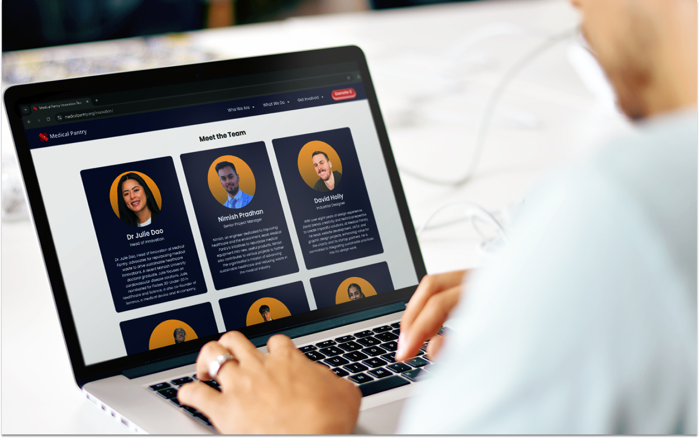
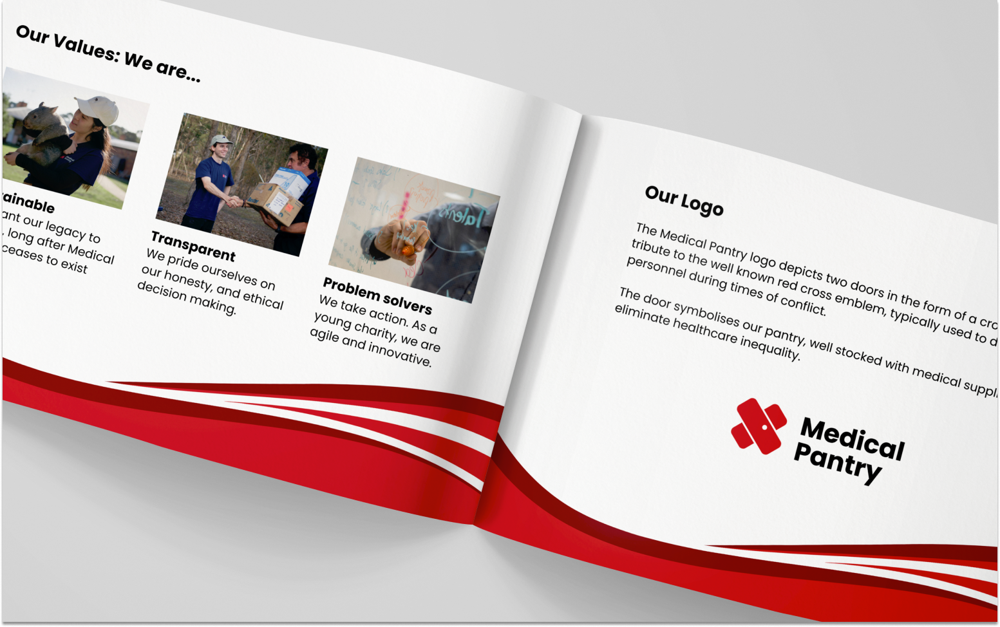
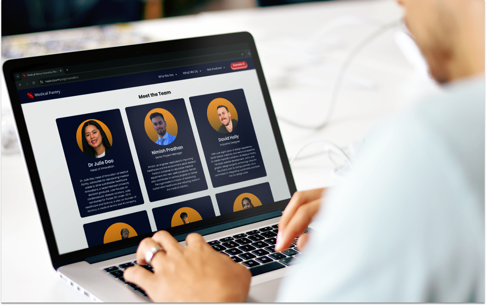
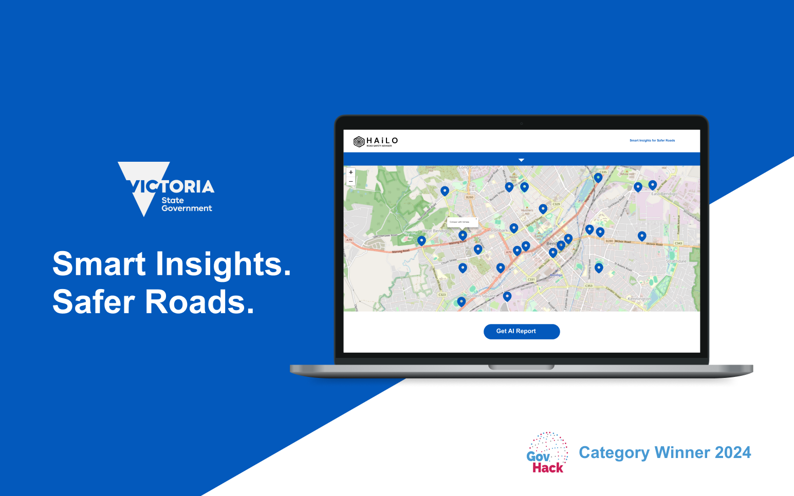
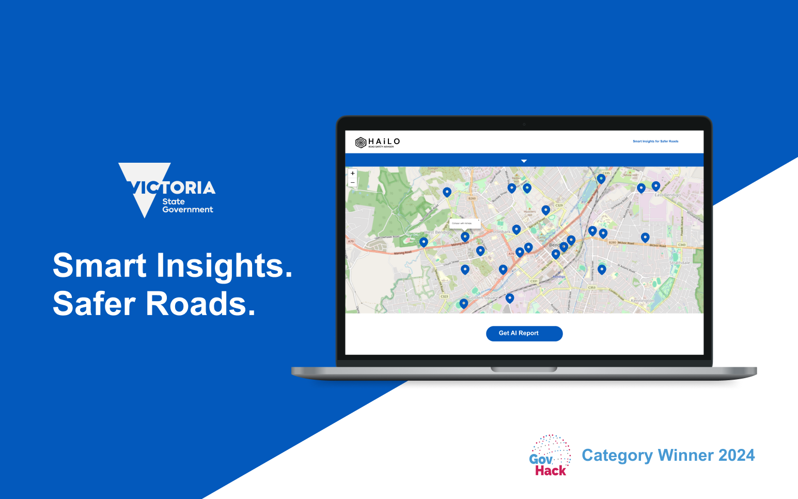

I'm a Melbourne-based designer with over 8 years of experience, combining creativity and precision to deliver user-centred solutions. A passionate advocate of wellbeing, sustainability and social impact, I excel at simplifying and communicating complex ideas, solving problems, crafting designs and building products that empower users.
I’m ready to bring my experience and add value to new opportunities!
"David’s work has been phenomenal—seamlessly blending human-centered design with technical front-end expertise to create new products for us. He worked within our branding and guidelines to ensure a polished, cohesive result that aligns perfectly with our vision."
Dr Marty Nguyen
Founder and CEO of Medical Pantry
Adaptability across Design Disciplines
Product Branding, Graphic Design, Logo Design, Brochure Design, Technical Writing
 

 

Brochure Design, Technical Writing, Data Sheets, Product Updates
Branding, Logo Design, Graphic Design
 



Branding, Logo Design, Graphic Design
Web Design, Web Development
 

Web Design, Web Development
Design Research, Service Design
Industrial Design, CAD